📖 10/30 漫畫版「一緒に行きませんか」
全 12 頁日漫複習（baoyu-comic --art manga --tone warm）。主角ハルト（約 37 歲、住神樂坂的語言學校新生，虛構）與老師ミキ先生。氣泡文字可能糊掉，請看圖下日語列（▶ 播放／⧉ 複製）。
角色設定（一致性）
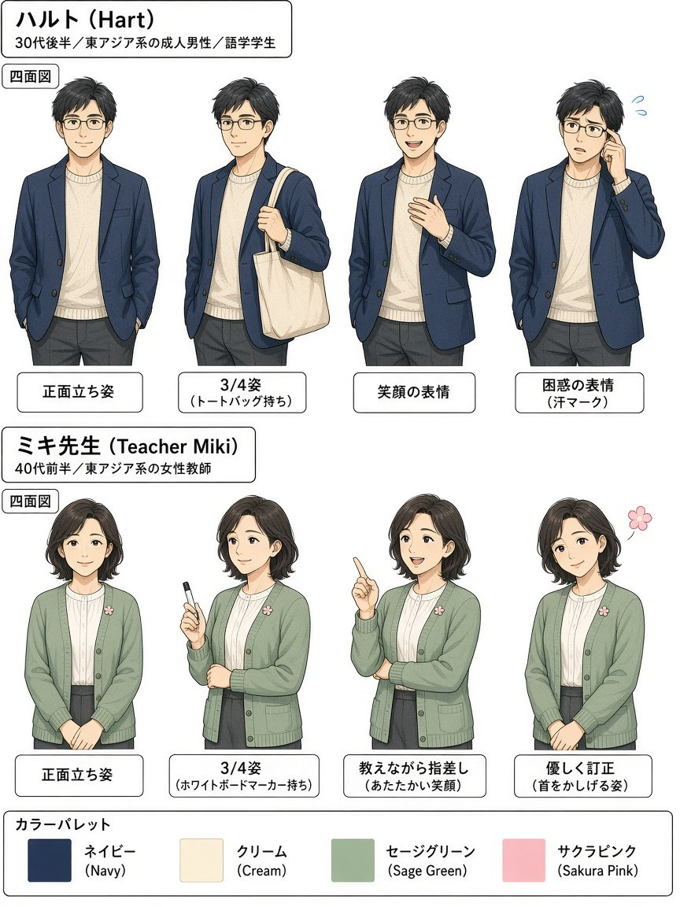
ハルト：東京・神樂坂附近的成人語言學校學生（晚 30 歲、眼鏡、海軍藍外套）。頁面上不使用任何真實姓名／肖像。
ミキ先生：溫柔的語言學校老師（鼠尾草綠開襟衫、櫻花徽章）。
畫風：日漫 clean ink、screentone、速度線、表情符號、日語氣泡。
圖上小錯誤備註：P10 白板「日曜年」應為「日曜日」；P11 票券裝飾字可能亂碼、畫面票數看起來多於 2；P12 第三格曾出現英文 SCHOOL（正確為「朝、学校に行きます」）——請以圖下日語列為準。
12 頁目錄
P01 畑と連濁：野菜畑・ラベンダー畑
畑と連濁：野菜畑・ラベンダー畑
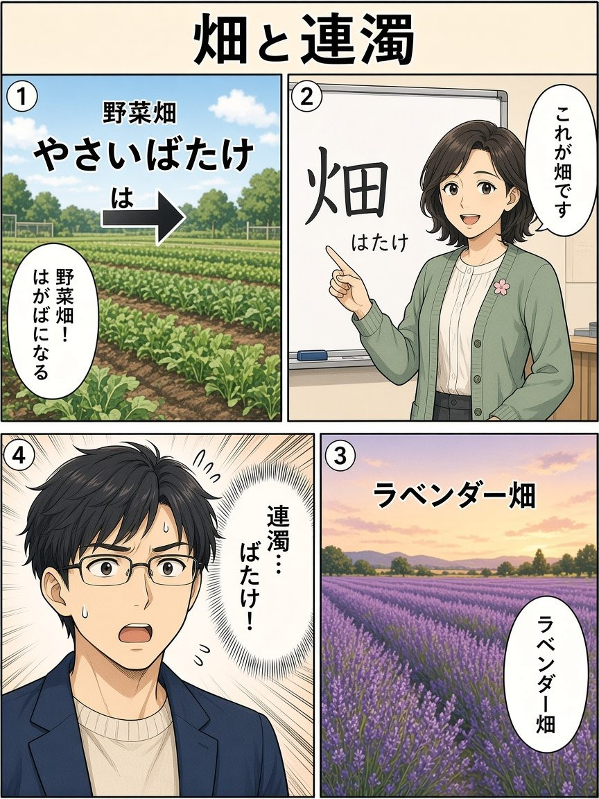
ミキ老師教「畑」；複合詞連濁 は→ば。
P02 都会・田舎・里・石・岩
都会・田舎・里・石・岩
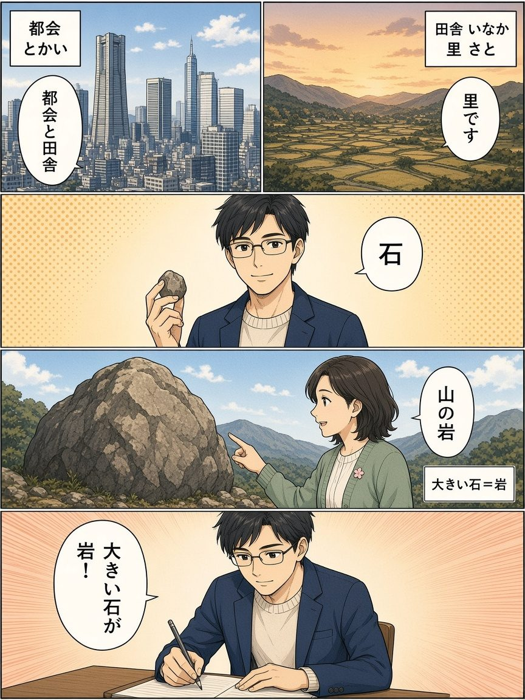
都會與鄉下對照；大石頭叫岩。
P03 語彙リスト：約束・用事・残念…
語彙リスト：約束・用事・残念…
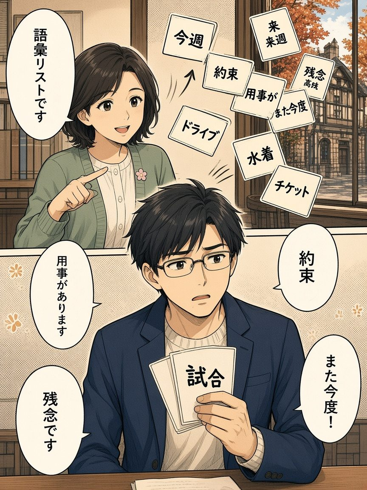
邀請相關單字卡。
P04 行きませんか vs 行きましょう
行きませんか vs 行きましょう
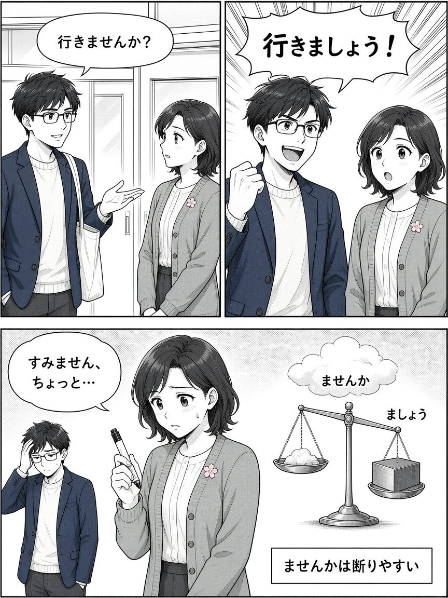
軟邀請 vs Let's go；婉拒難易。
P05 誘う：ご飯を食べに行きませんか
誘う：ご飯を食べに行きませんか
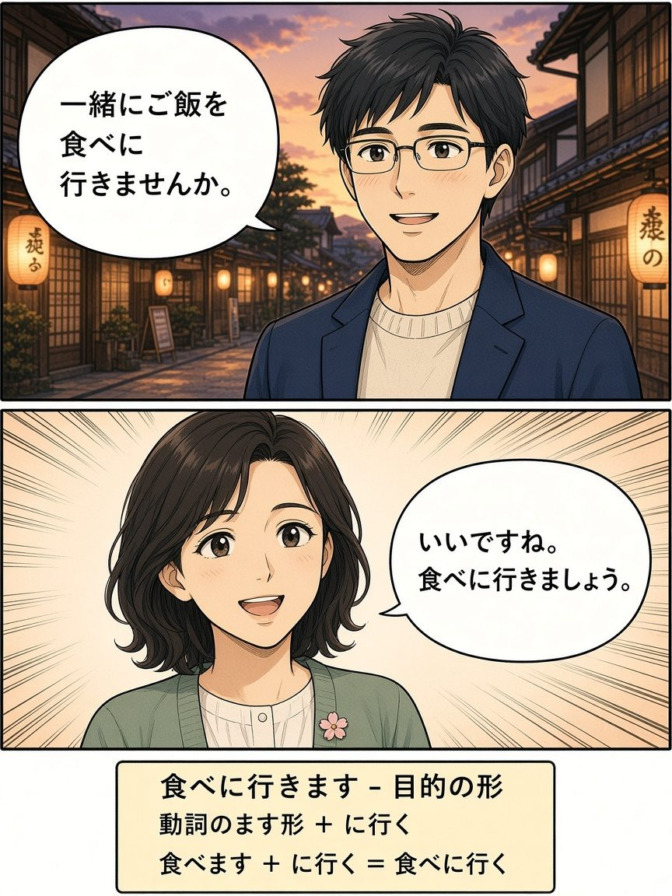
目的形＋ませんか邀請吃飯。
P06 断り方：ちょっと…／用事がありますから
断り方：ちょっと…／用事がありますから
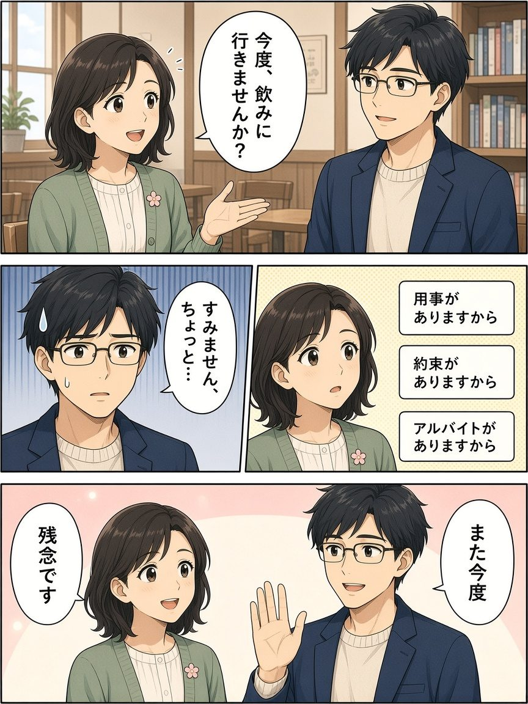
軟拒＋理由＋また今度。
P07 〔場所〕でイベントがあります
〔場所〕でイベントがあります
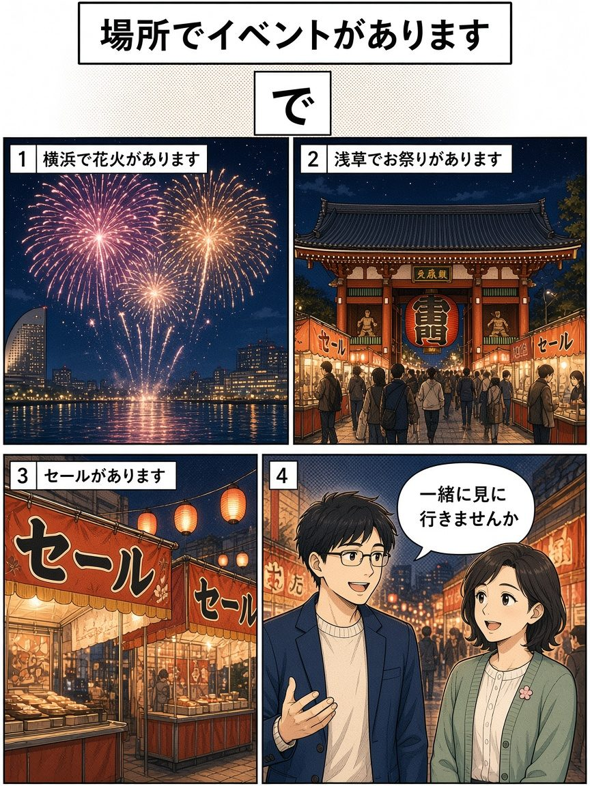
煙火・祭典・特賣用で。
P08 トルコフェス・代々木公園
トルコフェス・代々木公園
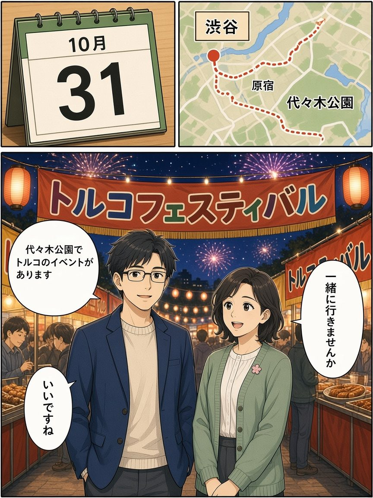
10/31 代代木公園土耳其祭。
P09 に vs で（あります）
に vs で（あります）
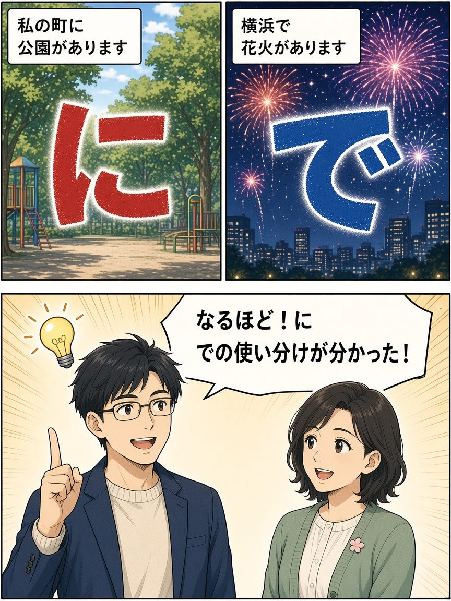
存在用に、活動用で。
P10 時間の「に」
時間の「に」
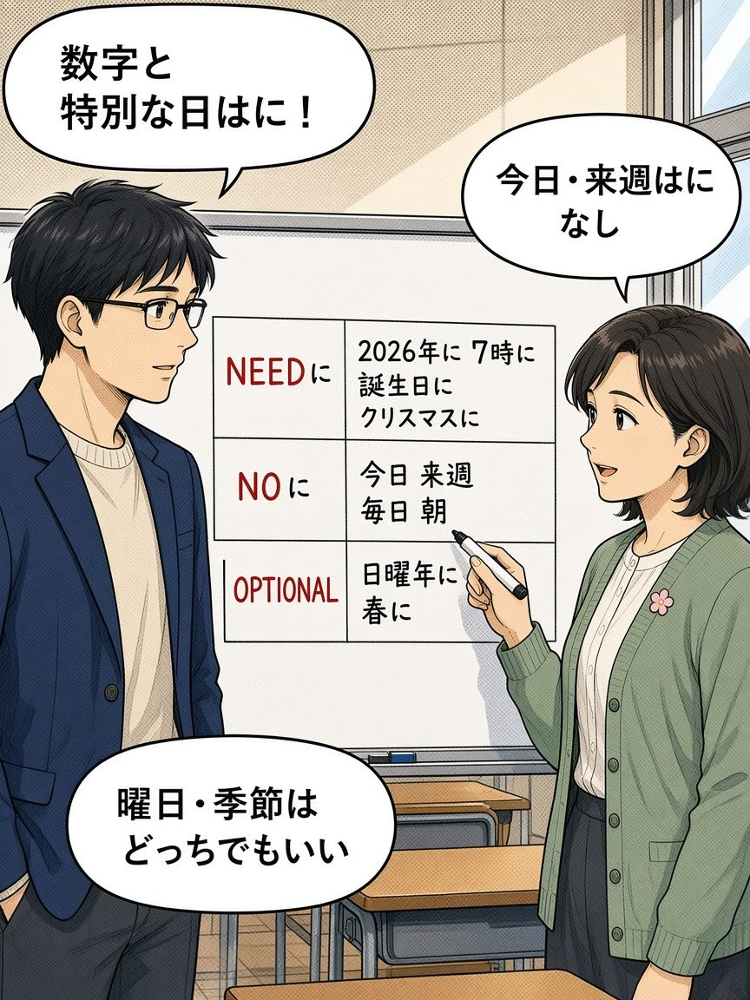
數字・特別日要に；今日・来週不要。
P11 チケットが2枚・聞きに行きませんか
チケットが2枚・聞きに行きませんか
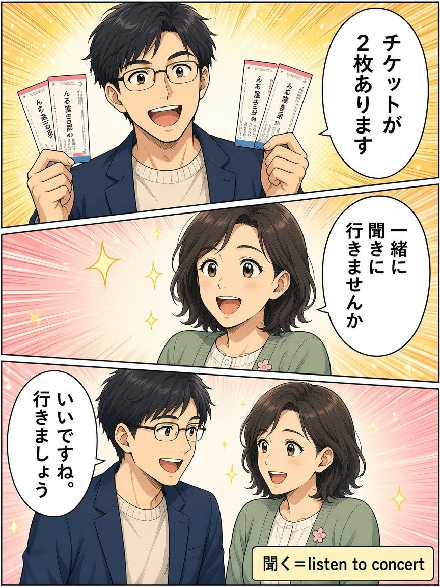
有票邀請去聽演唱會。
P12 よくあるまちがい・まとめ
よくあるまちがい・まとめ
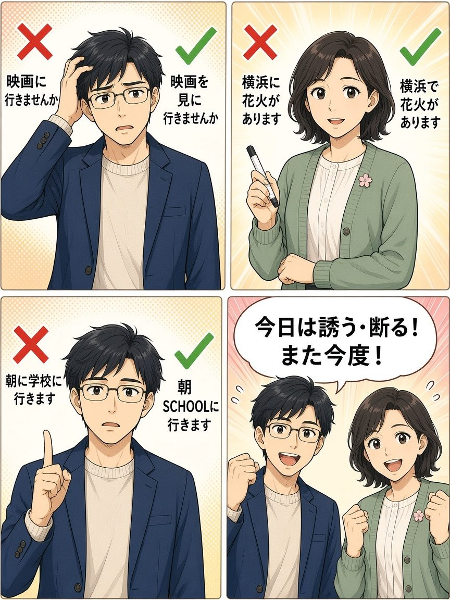
訂正常見錯誤；今天是誘う・断る。